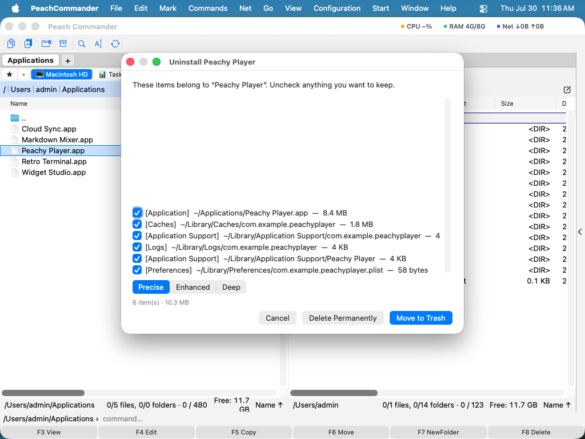

Uninstaller
Povlek aplikacije v Koš pusti njene podporne datoteke, predpomnilnike, nastavitve in vsebnike raztresene po vaših mapah Library. Vtičnik Uninstaller odstrani aplikacijo in te ostanke: poišče vse, kar je aplikacija pustila za seboj, vam pokaže seznam z velikostjo za vsak element in vse premakne v Koš, ko potrdite. Ker gre za vtičnik, ga lahko izklopite ali odstranite v Konfiguracija ▸ Vtičniki….
Odstranitev aplikacije pod kazalcem
- Postavite kazalec na aplikacijo (
.app) v podoknu. - Izberite Datoteka ▸ Odstrani aplikacijo… ali desni klik ▸ Odstrani aplikacijo… ali pritisnite Cmd+Shift+U.
- Odpre se okno pregleda, ki našteva aplikacijo in vsako sorodno datoteko, ki jo je našel, vsako označeno s kategorijo, potjo in velikostjo.
- Odznačite vse, kar želite obdržati, nato kliknite Premakni v Koš (ali Izbriši trajno).

(Slika: preglejte natančno, kaj bo odstranjeno, preden se karkoli izbriše.)Brskanje po vseh nameščenih aplikacijah
Izberite Ukazi ▸ Odstrani aplikacijo…, da odprete seznam aplikacij, nameščenih na vašem Macu, ki ga je mogoče iskati, z imenom, velikostjo in datumom namestitve vsake aplikacije. Izberite eno (ali več), kliknite Odstrani… in znajdete se v istem oknu pregleda. Seznam lahko filtrirate s tipkanjem v iskalno polje.
Iskanje preostalih datotek
Izberite Ukazi ▸ Poišči preostale datoteke…, da pregledate podporne datoteke, predpomnilnike in nastavitve, ki pripadajo aplikacijam, ki ste jih že izbrisali. Preglejte jih na enak način in jih odstranite. Če ni najdeno nič, vas vtičnik o tem obvesti.
Kako temeljito pregledati
Okno pregleda ima nadzor zaupanja:
- Natančno — datoteke, zasidrane na identifikator paketa aplikacije. Visoko zaupanje; vnaprej izbrano.
- Razširjeno — doda datoteke, ujemajoče se po imenu; ostane neoznačeno, da se lahko odločite.
- Poglobljeno — Razširjeno in pregled Spotlight za vse drugo, kar omenja aplikacijo; prav tako ostane neoznačeno.
Opombe
- Vtičnik ničesar ne izbriše neposredno — elementi gredo skozi Koš aplikacije ali trajni izbris, tako kot vsaka druga operacija z datotekami. Odstranjevanje datotek v
/Libraryali/varlahko zahteva geslo skrbnika. - Pred odstranitvijo vtičnik konča izvajajočo se aplikacijo in razloži njene elemente v ozadju (launchd), nato ponudi pospravljanje morebitnih zdaj praznih map ponudnika.
- Če je bila aplikacija nameščena s Homebrew, vas vtičnik opozori in predlaga
brew uninstall --cask, tako da Homebrew ostane usklajen. Aplikacije iz App Store so prav tako označene. - Ujemanja Razširjeno in Poglobljeno so po zasnovi nižjega zaupanja in začnejo neoznačena — preglejte jih pred odstranitvijo. Nekaterih elementov v ozadju, nameščenih prek sodobnega API-ja za prijavne elemente, tu ni mogoče odstraniti.